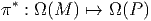
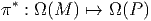
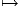
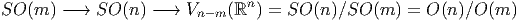
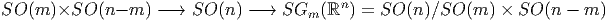
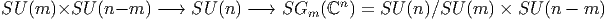
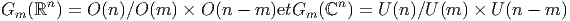
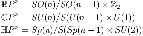
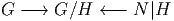

3.2 Espaces fibrés principaux
3.2.1 La structure d’espace fibré principal
Une fibration (P,M,π) est un espace fibré principal lorsque les trois conditions
suivantes sont satisfaites :
- (P,M,π) est un espace fibré localement trivial.
- Un groupe de Lie G agit (à droite) sur P, et ce, de façon transitive
dans chaque fibre.
- Toutes les fibres sont homéomorphes à G.
Les trois conditions ci-dessus sont obligatoires pour qu’on puisse parler de
fibré principal car nous verrons un peu plus loin des exemples où (1) et (2) sont
vérifiées (mais pas (3)) et des exemples où (1) et (3) sont vérifiées (mais pas
(2)).
En général, on considère des espaces fibrés principaux à droite, comme
ci-dessus, mais il est bien évident qu’on peut également considérer des espaces
fibrés principaux à gauche.
Le groupe G (la fibre type) est généralement désigné sous le nom de groupe
structural du fibré considéré. Afin d’alléger les notations, nous noterons très
simplement l’action de G sur P : Soient z1 ∈ P et g ∈ G, l’image z2 de z1 sous
l’action de g sera notée z2 = z1g, ce qui peut être décrit, de façon imagée, par la
figure 3.5.
Attention : Parce que G agit sur P, de nombreux physiciens désignent ces
transformations de P dans P (du type z ∈ P z′ = zg,g ∈ G) sous le nom de
transformations de jauge globales et désignent également G lui même sous le nom
de groupe de jauge ; cependant nous réserverons ce dernier vocable (groupe de
jauge) pour le groupe des transformations de jauge locales que nous définirons un
peu plus loin.
z′ = zg,g ∈ G) sous le nom de
transformations de jauge globales et désignent également G lui même sous le nom
de groupe de jauge ; cependant nous réserverons ce dernier vocable (groupe de
jauge) pour le groupe des transformations de jauge locales que nous définirons un
peu plus loin.
La relation z2 = z1g est formellement très semblable à la relation élémentaire
A2 = A1 +  où A1 et A2 désignent deux points d’un espace affine et où
où A1 et A2 désignent deux points d’un espace affine et où  désigne un vecteur de l’espace vectoriel sous-jacent. Les élèves de nos lycées
savent bien qu’on peut “soustraire” deux points en écrivant
désigne un vecteur de l’espace vectoriel sous-jacent. Les élèves de nos lycées
savent bien qu’on peut “soustraire” deux points en écrivant  = A2 -A1 (on n’a
pas le droit d’“additionner” deux points !). De la même façon, on pourra écrire
ici g = z1-1z
2, puisque z1g = z2 et que g est bien déterminé par la donnée de z1
et de z2. Notons enfin que l’analogue de la célèbre “relation de Chasles” s’écrit
z1-1z
2 = (z1-1z
3)(z3-1z
2).
= A2 -A1 (on n’a
pas le droit d’“additionner” deux points !). De la même façon, on pourra écrire
ici g = z1-1z
2, puisque z1g = z2 et que g est bien déterminé par la donnée de z1
et de z2. Notons enfin que l’analogue de la célèbre “relation de Chasles” s’écrit
z1-1z
2 = (z1-1z
3)(z3-1z
2).
3.2.2 Sections locales et trivialisations locales
Dans le cas d’un fibré principal, chaque fibre Gx au dessus de x, élément de M est
une “copie” du groupe G, mais il s’agit d’une copie au sens topologique (ou
différentiable) du terme car l’origine du groupe G (l’élément neutre) est
connue mais celle de la fibre Gx ne l’est pas ! Afin de mieux faire sentir le
sens de cette importante remarque, considérons l’exemple suivant 3.6
Dans le cas présent, P est un cylindre fini P = M ×S1 où M est un intervalle
et S1 désigne le cercle de rayon 1 ; la fibre au dessus de x est un cercle, et ce
cercle, comme tous les cercles, est homéomorphe au groupe U(1). Sur ce cercle,
tous les points “se valent” et on ne sait pas multiplier un point par un autre. Par
contre, si le cercle est marqué par une origine, il devient isomorphe au groupe
U(1) et on sait alors multiplier les points (eiθeiα = ei(θ+α)). Le groupe U(1) agit
bien sur l’ensemble P ci-dessus en faisant tourner un point quelconque z ∈ P d’un
angle θ.
Revenons au cas général d’un fibré principal (P,M,π) de groupe structural G.
Le choix d’une section locale x ∈ U ⊂ M σ(x) ∈ P permet de “marquer une
origine” sur chacune des fibres Gx situées au dessus de l’ouvert U. En
d’autres termes, le choix d’une section locale σ permet d’identifier la fibre
Gx avec le groupe G lui-même. La façon la plus simple d’exprimer ceci
de façon algébrique consiste à montrer qu’à la section locale σ on peut
associer une trivialisation locale ψU définie comme suit : soit z ∈ P,
alors ψU(z) = (x; gσ) où x = π(z) et où gσ désigne l’unique élément de G
défini par z = σ(x)gσ. En effet, z et σ(x) étant dans la même fibre, il
existe un et un seul élément gσ de G permettant de passer de σ(x) à
z ; l’existence et l’unicité de cet élément gσ résulte des axiomes (2) et
(3) de la structure de fibré principal. Une section locale σ définit donc
également une application — que nous noterons encore gσ — de P dans
G ; en d’autres termes, les “composantes” de z ∈ P sont x = π(z) ∈ M
et gσ = gσ(z) ∈ G. La composante x est canoniquement définie par la
structure fibrée et la composante gσ résulte du choix d’une section locale
σ.
σ(x) ∈ P permet de “marquer une
origine” sur chacune des fibres Gx situées au dessus de l’ouvert U. En
d’autres termes, le choix d’une section locale σ permet d’identifier la fibre
Gx avec le groupe G lui-même. La façon la plus simple d’exprimer ceci
de façon algébrique consiste à montrer qu’à la section locale σ on peut
associer une trivialisation locale ψU définie comme suit : soit z ∈ P,
alors ψU(z) = (x; gσ) où x = π(z) et où gσ désigne l’unique élément de G
défini par z = σ(x)gσ. En effet, z et σ(x) étant dans la même fibre, il
existe un et un seul élément gσ de G permettant de passer de σ(x) à
z ; l’existence et l’unicité de cet élément gσ résulte des axiomes (2) et
(3) de la structure de fibré principal. Une section locale σ définit donc
également une application — que nous noterons encore gσ — de P dans
G ; en d’autres termes, les “composantes” de z ∈ P sont x = π(z) ∈ M
et gσ = gσ(z) ∈ G. La composante x est canoniquement définie par la
structure fibrée et la composante gσ résulte du choix d’une section locale
σ.
Il faut enfin noter que le choix d’une section locale permet de définir
localement l’action à gauche du groupe G sur P ; en effet, en plus de l’action à
droite z ∈ P,k ∈ G → zk = (x; gσ)k = (x; gσk) ∈ P qui ne dépend pas
de σ et qui est globalement définie puisqu’elle résulte de la structure
d’espace fibré principal, on peut définir localement une action à gauche
z ∈ P,k ∈ G → (kz)σ = (x; kgσ) ∈ P, qui dépend de σ.
Supposons que nous ayons fait le choix d’une section locale σ au dessus de
l’ouvert U et d’une section locale τ au dessus de l’ouvert V ; si on fait un choix
de z ∈ P tel que la projection π(z) appartienne à l’intersection U ∩ V , on peut
écrire aussi bien z  (x; gσ) que z
(x; gσ) que z  (x; gτ). Il existe donc un élément gστ du
groupe G (et en fait une fonction gστ(x) définie sur U ∩ V ) tel que gσ = gστgτ.
Cette fonction porte le nom de fonction de transition . Ces fonctions de
transition permettent en fait de reconstruire le fibré principal lui-même. On
montre qu’étant donnés un atlas de M et une famille de fonctions de
transition obéissant à une certaine propriété (dite de cocycle) sur les
triples intersections, il est possible de reconstruire l’espace fibré dont on est
parti.
(x; gτ). Il existe donc un élément gστ du
groupe G (et en fait une fonction gστ(x) définie sur U ∩ V ) tel que gσ = gστgτ.
Cette fonction porte le nom de fonction de transition . Ces fonctions de
transition permettent en fait de reconstruire le fibré principal lui-même. On
montre qu’étant donnés un atlas de M et une famille de fonctions de
transition obéissant à une certaine propriété (dite de cocycle) sur les
triples intersections, il est possible de reconstruire l’espace fibré dont on est
parti.
3.2.3 Exemple fondamental : le fibré des repères linéaires
L’exemple qui suit est fondamental, non seulement parce qu’il est mathématiquement
important — il est d’ailleurs à l’origine de toute la théorie des espaces fibrés —
mais aussi parce qu’il permet de fournir un support à notre intuition géométrique,
en particulier dans le cas où l’on s’intéresse à des fibrés principaux (P,M,π)
quelconques. L’exemple fondamental étudié ici nous permettra de développer les
analogies suivantes :
- Considérer l’espace total P comme un ensemble de repères généralisés
sur la base M.
- Considérer le groupe structural G comme groupe de transformations
de repères.
- Considérer un élément quelconque z de P comme un repère
(généralisé) situé au point x de M (avec x = π(z)).
- Considérer toute section locale σ(x) comme un repère mobile
(généralisé) dans l’ouvert U.
- Considérer les fonctions de transition gστ comme décrivant des
changements de repère mobile.
- etc
Soit M une variété différentiable de dimension n. En chaque point x de M
nous avons un espace tangent T(M,x) et nous pouvons considérer l’ensemble Gx
de tous les repères en x. Un point z de Gx est donc un repère en x, c’est à dire la
donnée de n vecteurs indépendants de T(M,x). Soit P = ⋃
x∈MGx l’ensemble de
tous les repères de M. Notons π l’application qui, à un repère centré
sur x, associe l’origine x elle-même ; il est facile de voir que (P,M,π)
est un espace fibré principal de groupe structural GL(n). Il est clair,
en effet, que le groupe linéaire GL(n) agit transitivement sur chaque
fibre de P : la fibre Gx au dessus de x n’est autre que l’ensemble des
repères en x et il est bien évident qu’on peut toujours passer d’un repère
z = (zi)i∈{1…n} à un repère z′ = (z′j) au même point x à l’aide d’un élément
g = (gji) de GL(n) : (z′
j = zigji). Par ailleurs, le fait que l’ensemble G
x
des repères en x soit homéomorphe à GL(n) peut se voir de la façon
suivante : marquons (choisissons) un repère de référence σ = (σ)i en
x ; alors, tout élément g de GL(n) définit un nouveau repère z = σg
au même point, mais réciproquement, tout nouveau repère z détermine
un et un seul élément g de GL(n) tel que z = σg. On obtient donc une
correspondance bi-univoque entre repères en x et éléments de GL(n) ; bien
entendu, cette correspondance dépend du choix du repère de référence σ. Il
resterait à montrer que cette application est bel et bien continue et à vérifier
les conditions de trivialité locale. Le fibré principal P ainsi construit se
note parfois FM (pour “Frame bundle of M”) et s’appelle le fibré des
repères linéaires sur M. Nous invitons le lecteur à relire la sous-section
précédente avec cet exemple en tête ; il est alors clair qu’une section locale
n’est autre qu’un repère mobile choisi dans le domaine d’un ouvert et
qu’une fonction de transition n’est autre qu’un changement de repère
mobile.
3.2.4 Sous-espace des vecteurs verticaux en un point z d’un espace
fibré
- Soit P un espace fibré principal et z un élément de P. P est, en
particulier, une variété, et toutes les constructions étudiées dans le
contexte des variétés différentiables peuvent être effectuées et on peut
donc considérer l’espace tangent à P en z que l’on notera T(P,z).
Cet espace vectoriel est évidemment de dimension m + n lorsque
dimM = m et dimG = n, M et G désignant respectivement la base
et la fibre type de P.
- Plutôt que de considérer l’espace tangent à tout l’espace P en z, nous
pouvons considérer l’espace tangent à la fibre Fx de P qui passe par
z (c’est à dire x = π(z)) ; cet espace vectoriel V z = T(Fx,z) est
naturellement un sous-espace vectoriel de T(P,z). Sa dimension est
égale à n puisque toutes les fibres ont dimension n. Le sous-espace V z
s’appelle espace tangent vertical au point z.
- Intuitivement, un vecteur est un petit déplacement (une flèche !).
Un vecteur de l’espace tangent T(P,z) est donc un déplacement
infinitésimal d’un “repère” (nous pensons intuitivement à z comme
étant une sorte de repère généralisé). Un déplacement infinitésimal
dans l’ensemble des repères peut s’analyser à l’aide de deux
mouvements très différents : on peut faire tourner le repère (sans
bouger l’origine) mais on peut également déplacer l’origine du
repère. Les déplacements verticaux du point z correspondent à des
mouvements de z dans sa fibre : on ne déplace pas le point de
base x = π(z) ; ainsi, les vecteurs de V z (les vecteurs verticaux
en z) correspondent à des déplacements infinitésimaux du repère
z qui n’entraînent aucun déplacement de l’origine x : on se
contente de “faire tourner” infinitésimalement (à l’aide d’une “petite
transformation” du groupe G) le repère z en x.
- Le lecteur pourra s’étonner de ne trouver, dans ce chapitre, aucun
paragraphe intitulé “sous-espace horizontal” ; il y a, à cela, une
excellente raison : alors que la notion de sous-espace vertical peut
se définir canoniquement, comme on vient de le voir, pour tout fibré
principal, il n’est par contre pas possible de définir canoniquement,
tout au moins en général, la notion de déplacement horizontal ;
une telle notion est tributaire d’un choix. L’étude des choix possibles
—pour un fibré principal donné— définit, en quelque sorte, la théorie
des connexions et fait l’objet du chapitre suivant.
- Le groupe G agissant (à droite) sur l’espace P, on peut définir, comme
d’habitude (voir le chapitre sur les groupes) des champs fondamentaux
ϵα associés aux éléments Xα de l’algèbre Lie(G). Par construction,
ϵα(z) est un vecteur vertical au point z et l’ensemble {ϵα(z)}α∈{1…n}
constitue une base de l’espace vectoriel V z.
Si z′ = zg désigne le repère issus de z par une “rotation” finie
g, on pourra écrire ϵα(z) = zXα et interpréter ϵα(z) comme une
déplacement infinitésimal du “repère” z à l’aide de la “rotation
infinitésimale” Xα.
Pour ne pas alourdir le texte, nous supprimerons les guillemets autour
des mots “repère” et “rotation” dans la suite du texte, mais le lecteur
devra se souvenir que ces mots désignent respectivement les éléments
du fibré principal considéré (qui ne sont pas nécessairement des
repères au sens usuel du terme) et les éléments du groupe structural
(qui n’est pas nécessairement un groupe de rotations).
- Les champs z → ϵα(z) sont des champs fondamentaux à droite puisque
P est —comme d’habitude— un fibré principal muni d’une action
à droite. A moins que P ne soit trivial (voir section suivante) il
n’existe pas d’action de G à gauche de P, en tous cas, pas d’action qui
soit canoniquement définie. Par contre, on peut toujours trivialiser P
localement en choisissant une section (locale) x ∈ M
 σ(x) ∈ P ;
on a vu qu’une telle section permettait d’identifier la fibre Fx avec
G lui-même en associant au point z ∈ Fx l’élément gσ de G défini
par l’équation z = σ(x)gσ. On a alors non seulement une action de
G à droite mais également une action de G à gauche définie par
k ∈ G,z = (x,gσ) ∈ P
σ(x) ∈ P ;
on a vu qu’une telle section permettait d’identifier la fibre Fx avec
G lui-même en associant au point z ∈ Fx l’élément gσ de G défini
par l’équation z = σ(x)gσ. On a alors non seulement une action de
G à droite mais également une action de G à gauche définie par
k ∈ G,z = (x,gσ) ∈ P z′ = (x,kgσ) ∈ P. Cette action dépend de la
section σ et permet de définir localement des champs fondamentaux
à gauche eα(z) ; ces champs dépendent donc également du choix de
la section σ et, si la chose est nécessaire, on pourra les noter σe
α.
z′ = (x,kgσ) ∈ P. Cette action dépend de la
section σ et permet de définir localement des champs fondamentaux
à gauche eα(z) ; ces champs dépendent donc également du choix de
la section σ et, si la chose est nécessaire, on pourra les noter σe
α.
- Pour résumer, on pourra dire que la fibre Fx au dessus de x apparaît
comme une copie du groupe G, le choix d’une section locale σ(x)
permet de marquer l’origine (l’identité du groupe) sur la fibre Fx. On
peut ainsi identifier G avec Fx et l’algèbre de Lie de G avec l’espace
vertical T(Fx,σ(x)) au point σ(x). Le groupe G agit sur lui-même
par multiplications à gauche et à droite, il agit canoniquement sur Fx,
du côté droit, puisqu’on a affaire à un fibré principal, mais on peut
aussi le faire agir à gauche dès qu’on a identifié G avec Fx, c’est à
dire dès qu’on a choisi une section σ(x). Le choix de σ permettant
d’identifier G avec Fx permet donc également de définir une forme de
Maurer-Cartan σθ(x) pour la fibre F
x. Cette forme “ramène” donc à
l’origine σ(x) les vecteurs verticaux appartenant à V σ(x)g.
3.2.5 Fibré principal trivial
Un fibré principal (P,M,π) de groupe structural G est trivial si, par définition, P
est homéomorphe au produit cartésien M ×G (la projection π étant la projection
sur le premier facteur). dans ce cas, il existe plusieurs (en général une infinité de)
sections globales puisque toute application différentiable de M dans G définit une
section globale : considérer par exemple l’application constante qui, à tout
point de M associe l’identité de G. Réciproquement, supposons qu’un
fibré principal possède une section globale σ, on peut alors considérer
l’application de P dans M × G définie par z → (x,g) avec x = π(z) et g
tel que z = σ(x)g ; on fabrique ainsi un homéomorphisme entre P et
M × G.
En conclusion, un fibré principal est trivial si et seulement s’il possède une
section globale. Lorsque P est trivial, son identification avec M × G résulte,
comme on vient de le voir, du choix de la section globale σ ; on écrira simplement
P = M × G si cela ne prête pas à confusion. Noter que, dans un tel cas, les
champs fondamentaux à droite ϵα et à gauche σe
α sont tous deux globalement
définis.
Attention : pour des fibrés non principaux (voir plus loin), le fait de posséder
une section globale n’est pas suffisant pour assurer la trivialité.
Nous n’aborderons pas le problème de la classification des espaces fibrés, le
lecteur interessé devrait consulter [8].
3.2.6 Formes basiques, invariantes et horizontales
-
Formes basiques
- L’existence de l’application de projection π : P
 M
permet, comme nous le savons, de projeter les vecteurs de TP sur les
vecteurs de TM, en utilisant l’application tangente π* ; l’application
cotangente, π*, permet, quant à elle, de faire voyager les formes dans
l’autre sens. L’image, par π* d’une forme différentielle sur M est une
forme particulière sur P qu’on appelle une forme basique. On obtient
un homomorphisme injectif d’algèbres différentielles
 On peut donc identifier l’algèbre Ω(M) avec la sous-algèbre des
formes basiques π*(Ω(M)) ⊂ Ω(P).
M
permet, comme nous le savons, de projeter les vecteurs de TP sur les
vecteurs de TM, en utilisant l’application tangente π* ; l’application
cotangente, π*, permet, quant à elle, de faire voyager les formes dans
l’autre sens. L’image, par π* d’une forme différentielle sur M est une
forme particulière sur P qu’on appelle une forme basique. On obtient
un homomorphisme injectif d’algèbres différentielles
 On peut donc identifier l’algèbre Ω(M) avec la sous-algèbre des
formes basiques π*(Ω(M)) ⊂ Ω(P).
-
Formes horizontales
- Une forme sur P est horizontale, par définition,
si elle s’annule sur les vecteurs verticaux. Etant donné que l’espace
tangent vertical en un point z de P est engendré par les champs
de vecteurs fondamentaux Xα(z), avec Xα ∈ Lie(G), il suffit de
tester l’annulation sur les champs en question. En d’autres termes,
soit X ∈ Lie(G) et désignons iX le produit intérieur d’une forme par
le champ X(z) ; la forme ω ∈ Ω(P) est donc une forme horizontale
si et seulement si, pour tout X,

-
Formes invariantes
- Puisque le groupe G agit sur P, on peut
s’intéresser à son action infinitésimale sur les formes décrite par la
dérivée de Lie LX = diX + iXd. On dit qu’une forme ω est une forme
invariante si et seulement si, pour tout X,

-
Formes basiques (bis)
- Le fait qu’une forme basique soit à la fois
invariante et horizontale est assez intuitif. Formellement cette
propriété découle immédiatement de l’invariance π(zg) = π(z)
lorsque g ∈ G. Retenons : La forme ω est une forme basique si et
seulement si, pour tout X,
 c’est à dire si et seulement si ω et dω sont horizontales.
c’est à dire si et seulement si ω et dω sont horizontales.
-
Remarque : Opération de Cartan
- Nous nous servirons assez peu de
ces notions de formes basiques, de formes invariantes ou de formes
horizontales, dans la suite de cet ouvrage. Cela dit, il faut bien
noter que les notions qui viennent d’être discutées fournissent une
formulation algébrique assez compacte de la notion d’espace fibré
principal (nous n’avons rien utilisé d’autre !) On peut, de fait,
utiliser ces propriétés pour définir la notion d’opération (de Cartan)
d’une algèbre de Lie, 𝔤, sur une algèbre différentielle commutative
graduée Ω (c’est bien le cas de l’algèbre des formes différentielles
sur une variété). On dit qu’on a une opération de Cartan lorsqu’à
tout X ∈ 𝔊, on associe une anti-dérivation iX (de degré -1) et une
dérivation LX = diX + iXd (de degré 0) telles que, ∀X,Y ∈ 𝔊, on
ait L[X,Y ] = LXLY - LY LX et i[X,Y ] = LXiY - iY LX. La donnée d’un
fibré principal P fournit automatiquement une opération de Cartan
de Lie(G) sur Ω(P) mais il est certain que la notion d’opération de
Cartan est plus générale. Dans ce cadre plus général, on définit encore
les sous espaces ℌ, ℑ et 𝔅 = ℌ∩ℑ des formes horizontales, invariantes
et basiques, et on montre aisément que ces trois sous-espaces de Ω
sont des sous-algèbres différentielles graduées de Ω.
-
Remarque : Champs de vecteurs projetables
- Nous rappelons ici
la définition des champs de vecteurs projetables par une application
différentiable (dans ce cas, il s’agit de la projection π : PM du
fibré considéré), notion générale déjà introduite au chapitre 1. Ici
l’ensemble des antécédents de x ∈ M par π n’est autre que la fibre
au dessus du point x. Un champ de vecteurs V ∈ ΓTP est donc dit
projetable si et seulement si π*V z = π*V zg pour tout g ∈ G.
Plusieurs propriétés des espaces fibrés (et des connexions) pourraient
s’enoncer en utilisant cette notion, que nous n’utiliserons pas
explicitement dans la suite.
3.2.7 Exemples
Le fibré des repères linéaires
Nous avons déjà étudié cet exemple en détail en 3.2.3 et nous verrons un peu plus
loin divers exemples analogues.
Fibration d’un groupe G en sous groupes H au dessus de G∕H
- Notre premier exemple sera à la fois élémentaire et discret : notre
espace total P = Z Z est l’ensemble des entiers relatifs et la projection
π est celle qui, à un entier, associe sa classe modulo p (p désignant un
entier quelconque choisi une fois pour toutes). Le groupe structural
est alors le sous-groupe pZ Z de Z Z. Illustrons ceci, dans le cas p = 3
par la figure 3.7
L’espace total Z Z s’écrit donc ici comme réunion de trois fibres. La fibre
type est le groupe additif des multiples de 3, noté 3Z Z et l’espace
des fibres —la base— possède trois points : Z Z∕3Z Z = {0,1,2}
et est un quotient de Z Z. La notation adoptée, pour l’action du
groupe structural sur l’espace total Z Z est ici une notation additive et
non pas une notation multiplicative (mais cela devrait être assez
clair !), ainsi, l’élément 11 de la fibre 2 peut s’obtenir à partir de
l’élément -1 de la même fibre sous l’action de 3Z Z en écrivant
11 = -1 + 3 × 4.
- Après cet exemple discret et extrêmement élémentaire (l’art de
reconsidérer des choses bien connues avec un éclairage différent … !)
passons à un autre exemple, presque aussi élémentaire, mais “continu”.
L’espace total, comme dans l’exemple précédent, est un groupe, ici le
groupe SU(2). Rappelons, que SU(2) est topologiquement identifiable à la
sphère S3. Nous choisissons un sous-groupe U(1), c’est à dire un grand
cercle passant par l’origine et effectuons une décomposition en classes de
SU(2) par rapport à cet U(1) : soit g un élément de SU(2) qui
n’appartienne pas au U(1) choisi, on construit alors l’ensemble
g = gU(1) = {gh|h ∈ U(1)}. Ensuite, on choisit un élément k qui
n’appartienne ni au U(1) choisi, ni à g. On construit alors k = kU(1) et on
continue … On écrit ainsi le groupe SU(2) comme une réunion (infinie)
de classes du type g = gU(1), l’ensemble de ces classes étant par
définition, l’ensemble quotient SU(2)∕U(1) qu’on identifie (voir le
chapitre sur les groupes et espaces homogènes) avec la sphère S2. Le
groupe SU(2) —c’est à dire la sphère S3— peut donc être considéré
comme réunion d’une infinité de cercles S1 paramètrée par la sphère
S2.
Bien évidemment, le groupe U(1) agit, par multiplication à droite, sur
l’espace total SU(2) (dans la construction précédente on a choisi U(1)
comme sous-groupe de SU(2)). Cette fibration en cercles de S3
est souvent utilisée et porte le nom de “fibration de Hopf” (pour
S3).
Avant de généraliser cet exemple, notons que la sphère S3 n’est, en aucun
cas homéomorphe au produit cartésien S2 × S1, ce qui ne l’empêche pas
d’être un fibré en cercles au dessus de S2. En d’autres termes, les deux
espaces fibrés principaux S3 S2 et S2 × S1
S2 et S2 × S1 S2 (avec projection
canonique évidente) ont même structure locale —ils sont tous deux fibrés
en cercles au dessus de S2— mais le second est trivial alors que le premier
ne l’est pas.
S2 (avec projection
canonique évidente) ont même structure locale —ils sont tous deux fibrés
en cercles au dessus de S2— mais le second est trivial alors que le premier
ne l’est pas.
- Passons maintenant à la généralisation de l’exemple qui précède. Soit
G un groupe de Lie et H un sous-groupe de Lie, qu’on supposera fermé
dans G pour que la topologie du quotient soit séparée. On considère
la relation définissant les classes à gauche de H : g et k sont reliés
si k appartient à l’ensemble gH. Il s’agit d’une relation d’équivalence
et on peut écrire G comme réunion de ses classes gH ; l’ensemble des
classes étant, par définition, l’ensemble quotient G∕H. Il est évident
que H agit (à droite) sur G et que l’application G
 G∕H qui, à tout
élément associe sa classe g = gH, définit une fibration principale.
Tout groupe G est donc ainsi un espace fibré principal au dessus de
G∕H, le groupe structural étant H. Notons que l’espace quotient (la
base du fibré) G∕H n’est généralement pas un groupe, à moins que
H ne soit un sous groupe distingué de G, c’est à dire à moins que les
classes à gauche et à droite ne coïncident. La propriété qui précède est
illustrée par la figure 3.9 et est à l’origine d’une multitude d’exemples
que le lecteur pourra construire en utilisant les données “zoologiques”
concernant les groupes de Lie et les espaces homogènes (voir chapitre
précédent).
G∕H qui, à tout
élément associe sa classe g = gH, définit une fibration principale.
Tout groupe G est donc ainsi un espace fibré principal au dessus de
G∕H, le groupe structural étant H. Notons que l’espace quotient (la
base du fibré) G∕H n’est généralement pas un groupe, à moins que
H ne soit un sous groupe distingué de G, c’est à dire à moins que les
classes à gauche et à droite ne coïncident. La propriété qui précède est
illustrée par la figure 3.9 et est à l’origine d’une multitude d’exemples
que le lecteur pourra construire en utilisant les données “zoologiques”
concernant les groupes de Lie et les espaces homogènes (voir chapitre
précédent).
- Indiquons simplement ci-dessous quelques familles de fibrations
principales, basées sur la construction précédente. Nous utilisons la
notation H-→G-→G∕H pour caractériser une telle fibration de G au
dessus de G∕H. Le nom figurant en titre est celui donné à l’espace
quotient.
-
Variétés de Stiefel réelles
-

-
Variétés de Stiefel complexes
-

-
Variétés de Stiefel quaternioniques
-

Si x = x0 + ix1 + jx2 + kx3 ∈ I H, alors x = x0 - ix1 - jx2 - kx3,
et (x|y) = ∑
xiyi. Comme dans le chapitre précédent, la notation
Sp(n) désigne le groupe de Lie compact simplement connexe
correspondant à la forme réelle compacte de l’algèbre de Lie
complexe Cn. Avec d’autres notations : Sp(n) = U(n, I H) =
{u ∈ GL(I H)|(u(x)|u(y)) = (x|y). Le groupe symplectique (non
compact) usuel correspondant à la même algèbre de Lie Cn sera
généralement plutôt désigné par la notation Sp(2n, I R).
Le cas m = n - 1 mérite une attention particulière puisque nous obtenons
les sphères de cette façon.
Noter que la même sphère peut être obtenue comme base de plusieurs
fibrations différentes de groupes de Lie (trois possibilités si elle est de
dimension 4n - 1, deux possibilités si elle est de dimension 2n - 1 et une
seule possibilité si elle est de dimension paire). Il existe encore quelques
autres possibilités dites “exceptionnelles” et nous y reviendrons plus
loin.
Si nous divisons les groupes orthogonaux O(n) ou SO(n) — ou leurs
analogues complexes ou quaternioniques — par un sous groupe maximal
quelconque, nous obtenons plus généralement les variétés de Grassmann et
les fibrations principales correspondantes :
-
Grassmaniennes réelles orientées
-

-
Grassmaniennes complexes orientées
-

-
Grassmaniennes quaternioniques
-

Les Grassmaniennes non orientées réelles et complexes sont

Le cas m = n- 1 mérite également une mention particulière puisque nous
obtenons ainsi les espaces projectifs réels (I RPn), complexes (lCPn) et
quaternioniques (I HPn).

Le lecteur devrait également connaître l’existence des difféomorphismes
exceptionnels suivants : lCP1 ~ S2 et I HP1 ~ S4. Une remarque sur les
notations : H = S(U(n - 1) × U(1)) désigne un sous groupe maximal de
SU(n) ; on écrit quelquefois SU(n - 1) × U(1) pour désigner ce même
sous groupe H mais une telle notation est un peu abusive puisque H est en
fait en quotient du produit direct de ces deux groupes par un groupe
discret (il ne faut pas compter l’unité deux fois !). Les deux objets ont
bien évidemment la même algèbre de Lie. Une remarque analogue
s’applique au cas symplectique (par ailleurs on se rappelle que Sp(1) et
SU(2) sont isomorphes, ce qui explique l’apparition de ce dernier dans le
tableau précédent).
- Nous venons de voir que G peut être considéré comme espace fibré
principal à droite au dessus de G∕H = {gH|g ∈ G} mais il peut être
également considéré comme fibré principal à gauche au dessus de
H\G = {Hg|g ∈ G}. L’étude de ce ce cas est évidemment tout à fait
semblable à celle que l’on vient de mener.
- Voici un autre cas particulier de la construction précédente. On part du
groupe G×G (produit direct du groupe G avec lui même). On considère le
sous-groupe diagonal GΔ = {(g,g) ⊂ G × G|g ∈ G} qui est d’ailleurs
isomorphe à G et on fabrique le quotient. En résumé, on a un fibré
principal d’espace total G×G, de fibre type GΔ ~ G et de base G×G
GΔ ~ G.
La base est elle-même, en tant que variété, difféomorphe avec G, mais
la structure de groupe ne passe pas au quotient puisque GΔ n’a
aucune raison d’être distingué dans G × G. Posant GL = G × 1 et
GR = 1 × G, on voit qu’on peut écrire G ~ GLGR∕GΔ. Cet exemple
d’apparence innocent est assez subtil à analyser et pourra servir, dans la
suite, pour discuter de connexions (ou de métriques) particulières
sur les groupes de Lie. On peut aussi considérer les projections
GLGR
 GL ~ G et GLGR
GL ~ G et GLGR GR ~ G qui définissent deux autres
fibrés principaux (cette fois-ci, la structure de groupe passe au
quotient).
GR ~ G qui définissent deux autres
fibrés principaux (cette fois-ci, la structure de groupe passe au
quotient).
- Finalement, considérons le cas d’un sous groupe G qui n’est pas
simplement connexe. On sait qu’il admet un revêtement universel
simplement connexe
 et que G est isomorphe au groupe quotient
et que G est isomorphe au groupe quotient
 |H où H est un sous groupe discret (distingué) du centre de G
isomorphe au groupe d’homotopie π1(G). On se retrouve donc dans
la situation considérée précédemment d’une fibration de
|H où H est un sous groupe discret (distingué) du centre de G
isomorphe au groupe d’homotopie π1(G). On se retrouve donc dans
la situation considérée précédemment d’une fibration de  au dessus
de G =
au dessus
de G =  |H avec groupe structural (fibre type) H, à ceci près que
le groupe H est ici un groupe discret admettant une interprétation
topologique particulière et que le quotient G est non seulement un
espace homogène, mais est lui-même un groupe. Plus généralement
d’ailleurs, tout sous groupe K ⊂ H ~ π1(G) définit un revêtement
|H avec groupe structural (fibre type) H, à ceci près que
le groupe H est ici un groupe discret admettant une interprétation
topologique particulière et que le quotient G est non seulement un
espace homogène, mais est lui-même un groupe. Plus généralement
d’ailleurs, tout sous groupe K ⊂ H ~ π1(G) définit un revêtement
 ∕K qui est un fibré principal au dessus de G =
∕K qui est un fibré principal au dessus de G =  ∕H avec fibres
H|K (c’est bien un groupe puisque H est abélien) ; ce revêtement
n’est pas universel puisque son π1 est égal à K. Tout ceci est presque
intuitif si on se représente ces fibrations par des figures telles que 3.10.
∕H avec fibres
H|K (c’est bien un groupe puisque H est abélien) ; ce revêtement
n’est pas universel puisque son π1 est égal à K. Tout ceci est presque
intuitif si on se représente ces fibrations par des figures telles que 3.10.
Fibration d’un espace homogène G∕H1 en groupes H2 au dessus de
G∕(H1 × H2)
Soit H un sous groupe de Lie d’un groupe de Lie G et supposons que H soit
isomorphe au produit H1 × H2 de deux groupes de Lie. On peut alors considérer
H1 (en fait H1 × Identité) comme sous groupe de G et on a une projection
G∕H1 G∕(H1 × H2) de fibre H2. L’action de H2 (à droite) sur G∕H1 est bien
définie car H1 et H2 commutent, et donc (gH1)h2 = (gh2)H1 lorsque h2
appartient à H2. Vu la diversité des cas à considérer nous n’énoncerons aucun
résultat précis dans ce cas. Néanmoins nous énoncerons les trois remarques
suivantes :
G∕(H1 × H2) de fibre H2. L’action de H2 (à droite) sur G∕H1 est bien
définie car H1 et H2 commutent, et donc (gH1)h2 = (gh2)H1 lorsque h2
appartient à H2. Vu la diversité des cas à considérer nous n’énoncerons aucun
résultat précis dans ce cas. Néanmoins nous énoncerons les trois remarques
suivantes :
- “En général” la situation précédente conduit à un fibré principal
H2-→G∕H1-→G∕(H1 × H2) de groupe structural H2.
- Bien souvent, et en particulier lorsque G est un groupe simple, le sous
groupe H considéré n’est pas isomorphe au produit H1 ×H2 de deux
groupes de Lie, mais au quotient d’un tel produit par un groupe discret
(on a donc LieH = LieH1 ⊕ LieH2 au niveau des algèbres de Lie).
Dans ce cas, le résultat “général” précédent est valable à condition
de quotienter correctement par le groupe discret approprié.
- Le lecteur pourrait être également tenté de considérer des doubles
classes K\G∕H où H et K sont deux sous groupes de G. Attention :
la projection G∕H
 K\G∕H ne définit en général pas une fibration
principale, ni même une fibration, car le type topologique des fibres
(ou même la cardinalité) peut varier d’un point à l’autre de la base.
K\G∕H ne définit en général pas une fibration
principale, ni même une fibration, car le type topologique des fibres
(ou même la cardinalité) peut varier d’un point à l’autre de la base.
Afin de conclure cette sous section consacrée aux exemples par un théorème
précis concernant les fibrations principales d’espaces homogènes, nous considérons
maintenant le cas suivant.
Fibration principale de G∕H en groupes N|H au dessus de G∕N, N étant le
normalisateur de H dans G
Soit H un sous groupe de Lie du groupe de Lie G et soit N son normalisateur
dans G. On rappelle que N = {n ∈ G|nH = Hn} ;end’autrestermes, N est le
plus grand sous groupe de G dans lequel H est un sous groupe normal (on dit
aussi sous groupe distingué). H étant normal dans N, il s’ensuit que les classes à
gauche et à droite de N par rapport à H coïncident (voir ci-dessus la définition
de N) et que l’espace homogène N|H = N∕H = H\N possède une structure de
groupe. Par ailleurs, N agit à droite sur G∕H : soit gH ∈ G∕H et n ∈ N ;
alors gHn = gnH ∈ G∕H. Cette action n’est pas fidèle car les éléments de H
lui-même n’agissent pas : si h ∈ H, alors gHh = gH. Le fait de quotienter
N par H rend précisément cette action fidèle. On peut se représenter
les actions de G à gauche de G∕H et de N|H, à droite de G∕H par le
schéma :
 En
utilisant seulement l’action à droite, on obtient ainsi une fibration principale dont
l’espace total est G∕H et le groupe structural est N|H, il est facile de voir
que la base de la fibration est l’espace homogène G∕N (voir figure 3.11).
Ce type de fibration principale est également à l’origine d’une multitude
d’exemples. Les fibrations de Hopf des sphères au dessus des espaces projectifs
réels, complexes ou quaternioniques sont d’ailleurs de ce type. En effet, on
a
| G = SO(n) | H = SO(n - 1) | N = SO(n - 1) × Z Z2 | N|H = Z Z2 |
| |
| G = SU(n) | H = SU(n - 1) | N = SU(n - 1) × U(1) | N|H = U(1) |
| |
| G = Sp(n) | H = Sp(n - 1) | N = Sp(n - 1) × SU(2) | N|H = SU(2) |
| |
et on peut illustrer les fibrations correspondantes par la figure 3.12
On se souvient aussi que Z2 ≡ S0, U(1) ≡ S1 et SU(2) ≡ S3 ; ainsi les trois
fibres types représentées sur la figure 3.12 sont non seulement des groupes, mais
aussi des sphères.
Le lecteur pourra fabriquer aisément d’autres exemples de ce type en
choisissant, pour tout groupe G donné, un sous groupe H qui ne soit pas trop
“gros” (de façon à ce que N|H ne soit pas trop trivial). Voici un dernier exemple
de ce type qui utilise les groupes de Lie exceptionnels : G = E8, H = E6 ,
N = (E6 × SU(3))∕Z Z3, N|H = SU(3)∕Z Z3.
Fibrations exceptionnelles des sphères et des espaces projectifs
Il existe des fibrations exceptionnelles des sphères et des espaces projectifs qui
ne sont pas liées aux inclusions de groupes unitaires, orthogonaux ou
symplectiques (forme compacte) c’est à dire aux structures réelles, complexes ou
quaternioniques. Certaines de ces fibrations sont liées à l’existence de
l’“algèbre” non-associative des octaves de Cayley  (octonions). On sait que
pour n = 1, 2, 4, 8 (et ce sont les seules valeurs possibles), il existe une
opération bilinéaire I Rn × I Rn
(octonions). On sait que
pour n = 1, 2, 4, 8 (et ce sont les seules valeurs possibles), il existe une
opération bilinéaire I Rn × I Rn I Rn sans diviseurs de zéro (c’est à dire que
a × b = 0 ⇒a = 0oub = 0), conduisant à la définition des corps I R, lC, I H et des
octaves .
I Rn sans diviseurs de zéro (c’est à dire que
a × b = 0 ⇒a = 0oub = 0), conduisant à la définition des corps I R, lC, I H et des
octaves .
Certaines des fibrations mentionnées ici ne sont pas des fibrations principales
(en particulier la fibre type n’est pas un groupe) mais elles y ressemblent
beaucoup (on sait que la sphère S7, par exemple, est presque un groupe…) Nous
donnons ici une liste de fibrations qui sont à la fois intéressantes et célèbres (la
fibration de Hopf exceptionnelle de S15 !) bien qu’elles ne s’inscrivent pas
logiquement toutes dans cette section puisqu’il ne s’agit pas toujours de fibrations
principales. Nous ne les utiliserons pas dans la suite et ne les mentionnons que
pour des raisons culturelles, en espérant que le lecteur pourra y retourner (soit-dit
en passant, il reste à étudier de nombreux problèmes intéressants concernant ces
objets).